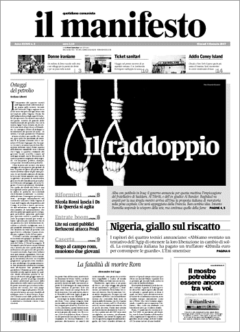

|
|
|
Navigazione
Contact Us |
Campaigners |
Face to Face |
Tribune |
Interview |
News |
On the Web |
One Million |
Report
Farsi | Français | German | Italian | Spanish | العربية Parole chiave |
 Femminismo - Una battaglia di donne in Iran La carica di un milione di firmeMarina Forti giovedì 30 novembre 2006 L’obiettivo può sembrare limitato: una campagna per abrogare le norme legali che discriminano le donne in Iran e sancire la parità giuridica di donne e uomini. Eppure la campagna lanciata alla fine di agosto da alcuni gruppi di donne iraniane è interessante ben al di là del suo carattere «riformista» e paritario. L’intenzione è di raccogliere «un milione di firme per cambiare le leggi discriminatorie». Per come è nata, per la diversità delle persone che vi partecipano, quest’iniziativa sta catalizzando un movimento diversificato per età ed estrazioni sociali e politiche. Un milione di firme non sono poche, e le attiviste che hanno lanciato questa campagna intendono raccoglierle una per una, con un lavoro capillare: porta-a-porta, riunioni nelle università e nei luoghi di lavoro, conferenze pubbliche, carovane nei villaggi e nei quartieri periferici... L’idea di buttarsi in una raccolta di firme è nata dopo la manifestazione femminista tenuta a Tehran il 12 giugno scorso, e sciolta dalla polizia a manganellate. Non era la prima volta che nella capitale iraniana si vedevano cartelli a favore dei diritti delle donne, e neppure la prima volta che la polizia o qualche milizia di vigilantes interveniva per «ristabilire l’ordine». Quel giorno però l’intervento è stato particolarmente brutale, donne d’ogni età sono state malmenate e una settantina arrestate, e la sera stessa su internet circolavano foto del pestaggio. Tra le donne arrestate c’erano note avvocate, giornaliste e attiviste sociali: due di loro sono state poi incriminate per «assembramento illegale». Anche se la manifestazione era un semplice sit-in pacifico, simile a quello tenuto lo stesso giorno di un anno prima, annunciato per tempo e convocato per rivendicare pari diritti giuridici per le donne. in ciò che riguarda matrimonio e divorzio, eredità, diritto proprietario, figli, lo statuto della persona - o le norme di derivazione islamica secondo cui la testimonianza di due donne equivale a quella di un solo uomo. «A quella manifestazione c’erano anche molti gruppi di studentesse, giovani e giovanissime femministe», spiega Firouzeh Mojaher, insegnante di letteratura italiana all’Università di Tehran e una delle promotrici del Centro Culturale delle Donne, cioè la prima biblioteca e centro di documentazione femminista sorto nella capitale iraniana (era a Roma in occasione di Medlink, la conferenza della società civile nel Mediterraneo e Medio oriente riunita a fine novembre). L’idea di raccogliere le firme, dice, è nata proprio dall’incontro tra diverse generazioni di attiviste. E forse dalla necessità di darsi un obiettivo pratico attorno a cui costruire una mobilitazione. La campagna «un milione di firme» è stata presentata infine il 27 agosto a Tehran durante un seminario pubblico. «L’esistenza di queste leggi in molti casi degrada le donne, le riduce a cittadine di seconda classe, assegna loro un valore che è metà di quello dell’uomo», dice l’appello, ora pubblicato su un sito web (www.we-change.org) con le firme di 51 promotrici, a cominciare dall’avvocata e premio Nobel Shirin Ebadi o dall’anziana poetessa Simin Behbahani che molte femministe iraniane guardano come una ispiratrice, poi l’editrice Shahla Lahiji, la regista Tahmineh Milani, o Sahla Sherkat che ha fondato e dirige Zanan («Donne»), uno di magazines femminili che alla fine degli anni ’90 ha contribuito a cambiare il discorso pubblico sulle donne. Nomi noti, intellettuali, militanti politiche, donne che hanno pagato a volte con la galera il loro impegno. Come la stessa Firouzeh Mojaher, che ogni tanto divaga e ricorda quando è stata chiusa nel carcere femminile, nell’84, accusata di simpatie di sinistra, e le sono rimaste impresse le scritte lasciate sui muri da generazioni di detenute prima di lei (ragazze in attesa dell’esecuzione in momenti più bui della storia iraniana, prima e subito dopo la Rivoluzione...). Poi riprende il filo: «Questa nuova generazione di femministe giovanissime ha un grande entusiasmo, avranno successo». «Non so se arriveremo davvero al milione, ma ci siamo rese conto che il processo stesso del raccogliere quelle firme si sta rivelando un’esperienza straordinaria: avremo costruito legami tra le donne ben al di là delle leggi che vogliamo cambiare», dice Firouzeh Mojaher. Per raccogliere quelle firme le femministe iraniane hanno cominciato a mobilitarsi in ambito urbano e rurale, nelle grandi città e quelle piccole. La firma, da mettere su un modulo apposito, è l’esito finale. Prima ci sono incontri pubblici, discussioni. Il solo problema è trovare una sala per le riunioni, «gli assembramenti indipendenti suscitano sempre qualche timore», spiega Mojaher. Racconta di riunioni affollate: «A volte sono studentesse o insegnanti che prendono l’iniziativa di organizzare una riunione, magari hanno chiamato vicine di casa e amiche. A volte ci arriva la richiesta di qualche gruppo che ha saputo di noi dal sito web». Le riunioni sono spesso animate: «C’è sempre un’avvocata o giurista in grado di passare in rassegna le leggi che discriminano le donne, si parla di famglia, di discriminazioni professionali, di patriarcato: tutto ciò che rende le donne delle cittadine minori». E’ più difficile il lavoro porta-a-porta: «Non perché le persone non vogliano parlare, troviamo sempre un dialogo: ma poi sono restie a firmare, un po’ dicono che è tutto inutile, un po’ sospettano che ci sia dietro qualche trappola, firmare un foglio è sempre un gesto compromettente». L’appello evoca «il potere dei numeri»: questa campagna, dice, «proverà una volta per tutte che la richiesta di cambiare le leggi discriminatorie non riguarda solo le poche migliaia di donne che si sono già mobilitate in passato», ma «è sostenuta dalla grande maggioranza di donne e uomini che soffrono delle iniquità delle leggi iraniane». Firouzeh Mojaher dice che è proprio così, «abbiamo trovato appoggi inaspettati». Racconta di incontri tenuti in piccoli centri industriali, di una missione a Tabriz e nell’Azerbaijan iraniano: «Là le cose sono più complicate, ci sono stati disordini a sfondo etnico di recente. Però abbiamo conosciuto giovani donne impegnate in movimenti sociali molto attive e piene di speranza». Alcune delle attiviste più giovani si sono trovate così per la prima volta fuori dai quartieri di classe media di Tehran - magari nelle periferie dove vivono le profughe afghane o le famiglie immigrate dalle regioni più depresse. «Le ragazze di Tehran ora si rendono conto di avere una vita privilegiata: hanno accesso all’informazione, lavorano, vivono sole. L’Iran è molto frammentato, il processo di modernizzazione ha diviso le classi sociali in modo ancor più profondo che ai tempi dello Shah. Anche il ceto medio è diversificato, per reddito e per cultura. Attraverso le differenze però certe idee si vanno affermando: ci sono ragazze che vengono da famiglie molto tradizionali e si sono messe a raccogliere le firme delle parenti durante le feste familiari...». Nella loro campagna, le attiviste del «milione di firme» hanno con sé due opuscoli. Uno contiene l’appello e un manuale sulle leggi discriminatorie che si chiede di cambiare, «l’altro è un quaderno in cui annotare l’esperienza fatta, tenere una sorta di diario delle conversazioni pubbliche, delle reazioni incontrate. Credo che alla fine tutte avremo tutte imparato qualcosa». Pubblicato Sabato 6 Gennaio 2007 alle ore 18:31 nella categoria La Politica delle donne. Messaggi:2 |